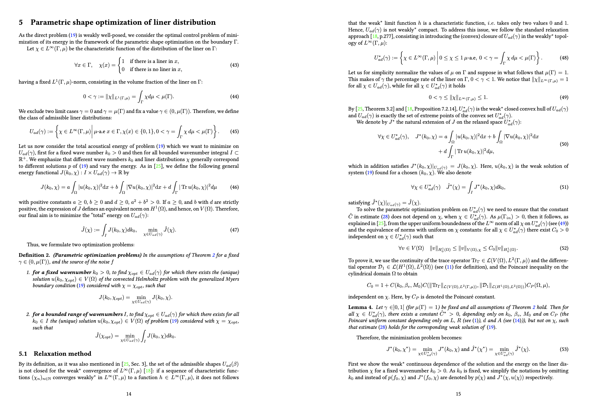
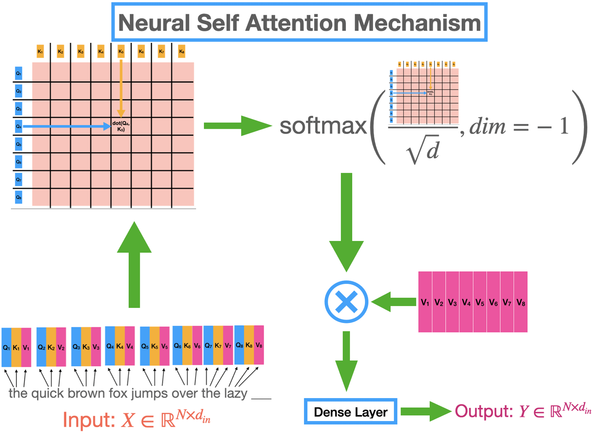
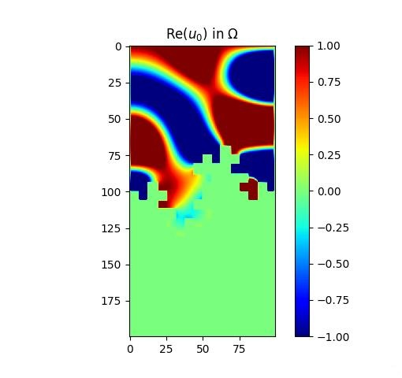
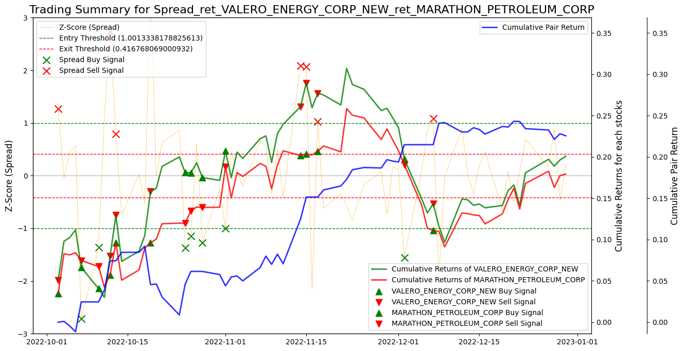
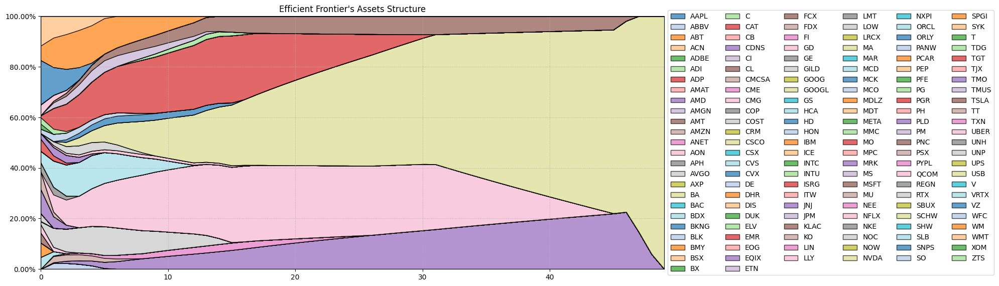
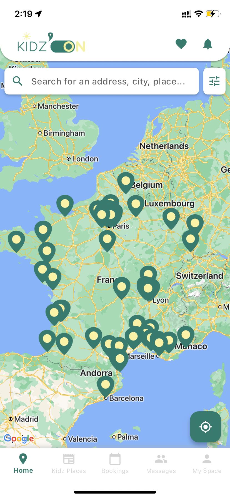

February 2023 – June 2024
This 18-month research project (with N. Alami, R. Pain Dit Hermier & A. Rozanova-Pierrat) studies
parametric shape optimization of the convected Helmholtz equation under a generalized Myers boundary
condition, with industrial applications to acoustic-liner design in jet engines. We prove existence of
optimal absorptive distributions minimizing acoustic energy.

As part of the “Machine Learning in Practice" at Columbia University, we reproduced the results from "Model Inversion Attacks that Exploit Confidence
Information and Basic Countermeasures" (Fredrikson et al., 2015) and implemented end-to-end inversion attacks in both white-box and black-box settings for Softmax, MLP and DAE architectures for facial recognition models. Then, we performed the same attacks for speaker recognition models.

This project consists of resolving problems seen in the "Data Mining" course at Columbia University, covering Performer-model approximations, feedforward-layer linearization, and local attention smoothing.

As part of my coursework at CentraleSupélec, I worked on a Kaggle competition to classify geographical areas into six categories (Residential, Commercial, Demolition, Road, Industrial, Mega Projects) using satellite image features. The dataset included 296,000 rows with numerical and categorical data, such as timestamps, RGB statistics, and polygon data.

This five-day project focuses on reducing noise in environments such as aircraft reactors by optimizing the distribution of sound-absorbing materials. Using finite difference methods to solve the Helmholtz equation, we implemented a gradient descent optimization algorithm to find the best material placement for minimizing energy across a range of frequencies. The project involved both numerical and theoretical analyses, exploring fractal geometries and material efficiency.

As part of the Data-Driven Methods in Finance course taught by Naftali Cohen (Schonfeld/Columbia University),
we developed and backtested a pair-trading strategy on S&P 500 data, then optimized its parameters
to maximize risk-adjusted returns.

As part of my coursework at CentraleSupélec, I worked on a project that aimed to optimize an investment portfolio using financial data. With a team, we applied Markowitz's portfolio theory to maximize returns while minimizing risk, analyzing data from the S&P 500. We evaluated risk through measures such as Expected Shortfall and Entropic Value at Risk. Our findings provided insights into managing risk under extreme market conditions. This project was carried out in collaboration with BNP Paribas Asset Management.

Kidz'On is an app designed to easily offer family activities close to your location. I developed the app from scratch, implementing features such as user management, synchronized family accounts, nearby activity search, interactive map, automatic translation, authentication, and messaging. The data comes from the website kidzon.fr, which was created by a friend I partnered with for this mission. On the website, businesses can register their locations and activities. We also set up the database, messaging system, and all backend features together.
Created an AI player for the board game Pylos using the Alpha-Beta algorithm. Designed heuristic functions
to optimize decision-making, enabling the AI to consistently outperform baseline strategies.